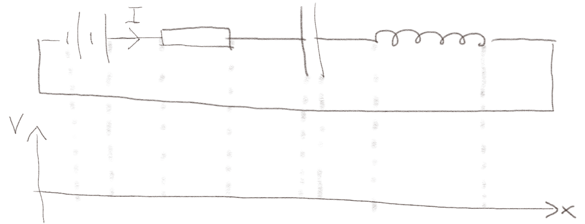
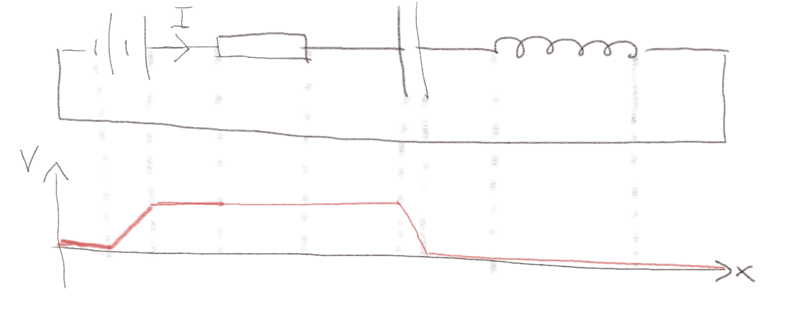
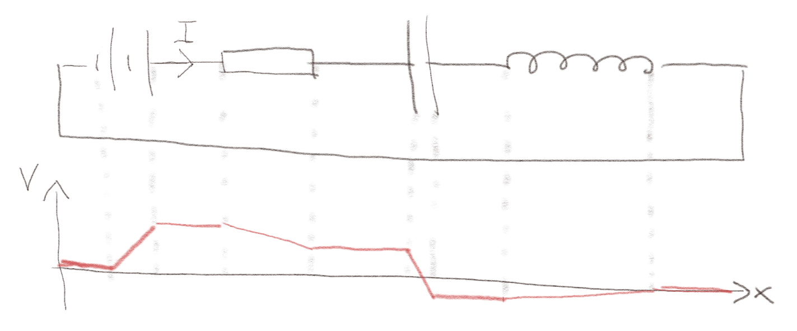
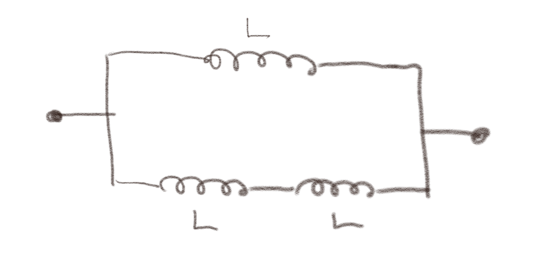
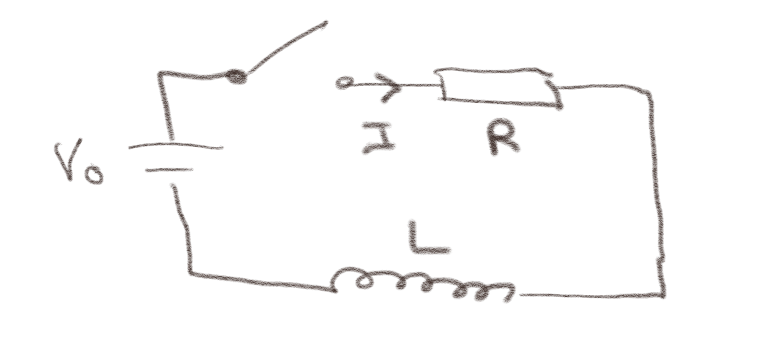
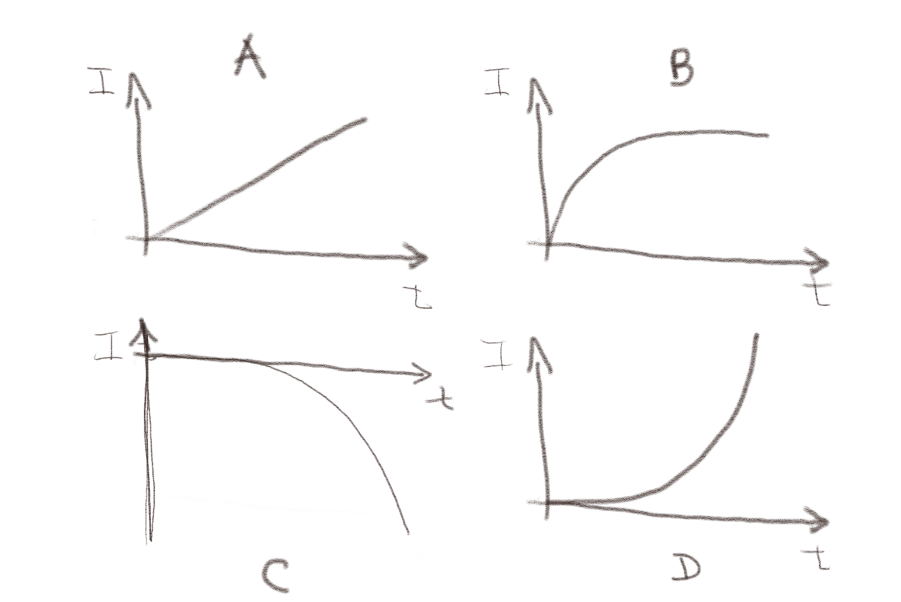
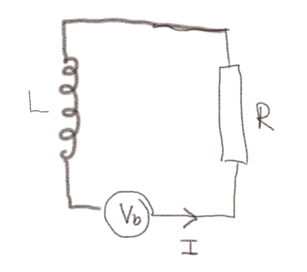

(Lærebok 15.1)
Figuren viser en krets med fire elementer, et batteri \( V_b \), en motstand \( R \), en kondensator \( C \) og en spole \( L \).

a) Det går en konstant strøm \( I \) i kretsen. Skisser spenningen som funksjon av \( x \) langs kretsen.
Hvis det går en konstant strøm \( I \) i kretsen kan det enten bety at ladningen på kondensatoren bygger seg opp eller det kan bety at strømmen er null mens det er en spenning over kondensatoren. Vi har skissert det siste tilfellet. Det første tilfellet kan kun være mulig i en tidsbegrenset periode. Du kan prøve å skissere dette selv.

b) Det går en strøm \( I \) som avtar med tiden. Skisser spenningen som funksjon av \( x \) langs kretsen.
I dette tilfellet vil spenningen over kondensatoren bygge seg opp, slik at spenningsfallet over denne øker. Dette kan ikke fortsette til evig tid, men kan kun skje i en tidsbegrenset periode. Hvis strømmen avtar betyr det at emf'en i kretsen som svarer til spolen er \( e = - \d \Phi / \d t \) hvor \( \Phi = LI \) slik at \( e = - L \d I / \d t \). Det betyr at når strømmen avtar vil spenningen øke over spolen. Vi har skissert dette for en situasjon hvor spenningsfallet over kondensatoren er relativt sett stort. Vi vet ikke noe om hvor stort spenningsfallet er over motstanden og kondensatoren uten mer kunnskap om verdiene for \( R \), \( I \) og \( C \). Det kan godt være at du har skissert en litt annen spenningskurve som likevel er riktig.

Tre spoler, alle med induktans \( L \), er koblet sammen som vist i figuren.

a) Hvis vi skal erstatte dem med en enkelt spole, hva må da \( L_T \) være for denne spolen?
\( L_T = (2/3)L \)
Vi kan erstatte de to spolene som er koblet i serie med en spole ved induktans \( L_S \): $$ \begin{equation} L_S = L + L = 2L \; . \tag{1} \end{equation} $$ Vi kan erstatte spolene \( L_S \) og \( L \) som er koblet i parallel med en spole \( L_T \): $$ \begin{equation} \frac{1}{L_T} = \frac{1}{2L} + \frac{1}{L} = \frac{3}{2L} \quad \Rightarrow \quad L_T = \frac{2}{3}L \; . \tag{2} \end{equation} $$
(Lærebok 15.2)
Figuren viser en \( RL \)-krets som drives av en spenningskilde \( V_0 \). Bryteren lukkes ved \( t=0 \).

a) Hva kan du si om \( I(t=0^{+}) \)?
0
I det bryteren lukkes vil det begynne å gå en strøm, men fordi \( \d I/\d t \) vil være svært stor i det bryteren lukkes, vil spenningsfallet over splolen svare til \( V_0 \) ved \( t = 0 \). Det betyr at strømmen når \( t=0 \) er null. Strømmen vil økte jevnt (kontinuerlig) fra 0.
b) Hvilken figur tro du best beskriver \( I(t) \)?

B
Strømmen vil øke når bryteren lukkes. Derfor er C utelukket. Effekten av spolen er kun til stede når det er en endring i \( I \). Når tiden går mot uendelige vil \( I \) blir konstant og \( \d I/\d t \) vil gå mot null. Det er kun B som har denne oppførselen. (Vi skal se på denne kretsen i mer detalj i neste oppgave).
Figuren viser en \( RL \)-krets som drives av en spenningskilde \( V_b(t) \).

a) Hva er Kirchoffs spenningslov rundt kretsen?
Kirchoffs spenningslov er for kretsen gir en spenningsøkning \( V_b \) over spenningskilden, et spenningfall \( RI \) over motstanden og en spenningsøkning \( e = - L \d I /\d t \) over spolen slik $$ \begin{equation} V_b - RI - L\frac{\d I}{\d t} = 0 \; . \tag{3} \end{equation} $$
b) Hva blir likningen for strømmen \( I(t) \) i kretsen?
Likningen for strømmen blir da en differensiallikning: $$ \begin{equation} \frac{\d I}{\d t} = \frac{V_b}{L} - \frac{R}{L}I \label{} \end{equation} $$
(Lærebok 15.2.4)